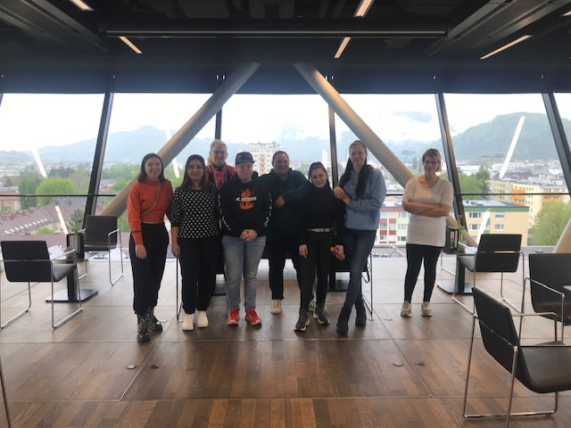

Willkommen
Eli
Flora
Larisa
Lieke
Miriam
Sabrina
Sophia
Danksagung
Abschlusspräsentation FiT-Basisqualifizierung 2 2023
Herzlich Willkommen zu unserer Abschlusspräsentation!

17.04.2023 - 14.07.2023
8 Teilnehmerinnen am Anfang, 7 am Schluss
10.05.2023 Ausflug in die Stadtbibliothek Salzburg